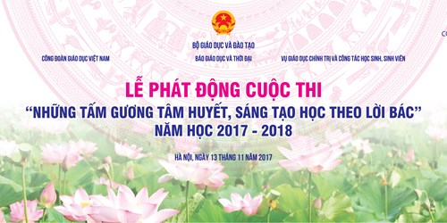

Phát động tham gia hưởng ứng Cuộc thi Những tấm gương tâm huyết, sáng tạo học theo lời Bác

Lần cập nhật cuối lúc Thứ sáu, 24 Tháng 11 2017 07:58 Viết bởi Administrator Thứ sáu, 24 Tháng 11 2017 07:41
Thể lệ cuộc thi: "Những tấm gương tâm huyết, sáng tạo học theo lời Bác" năm học 2017 - 2018

Thực hiện Chỉ thị số 05-CT/TW ngày 15/5/2016 của Bộ Chính trị khóa XII và Chỉ thị số 27/CT-TTg ngày 08/09/2016 về "Đẩy mạnh việc học tập và làm theo tư tưởng, đạo đức, phong cách Hồ Chí Minh trong ngành giáo dục" và Kế hoạch số 178 KH/BGDĐT của Bộ GD&ĐT thực hiện Chỉ thị 05-CT/TW, Báo Giáo dục và Thời đại phối hợp cùng Công đoàn Giáo dục Việt Nam, Vụ giáo dục Chính trị và Công tác học sinh, sinh viên tổ chức Cuộc thi "NHỮNG TẤM GƯƠNG TÂM HUYẾT, SÁNG TẠO HỌC THEO LỜI BÁC" NĂM HỌC 2017 - 2018.
I. MỤC ĐÍCH CUỘC THI
1. Nhằm tuyên truyền sâu rộng trong ngành Giáo dục và toàn xã hội về truyền thống tốt đẹp, về các tấm gương thầy giáo, cô giáo đã và đang tận tụy cống hiến cho sự nghiệp trồng người; gương người tốt việc tốt, các điển hình tiên tiến “Nhà giáo tiêu biểu”, học sinh, sinh viên trong học tập và làm theo tư tưởng đạo đức, phong cách Hồ Chí Minh.
2. Nâng cao nhận thức, tạo chuyển biến tích cực về tư tưởng đạo đức lối sống văn hóa, phong cách, tác phong làm việc đối với mỗi thầy cô và học sinh, sinh viên. Đẩy mạnh công tác tuyên truyền về ý nghĩa to lớn của việc học tập và làm theo tư tưởng, đạo đức, phong cách Hồ Chí Minh.
II. ĐỐI TƯỢNG DỰ THI
Đối tượng dự thi là công dân Việt Nam từ 15 tuổi trở lên quan tâm tới chủ đề này, tự nguyện tham gia và cam kết chấp hành các quy định của Thể lệ cuộc thi.
III. QUY ĐỊNH VỀ CÁC TÁC PHẨM DỰ THI
1. Nội dung
Tác phẩm dự thi là bài viết hoặc khoảnh khắc đẹp bằng ảnh những câu chuyện có thật, sinh động về tấm gương thầy cô giáo gương mẫu, sáng tạo, hết lòng vì học sinh thân yêu; về những gương sáng học sinh, sinh viên vượt qua khó khăn, phấn đấu trong học tập, hướng tới cuộc sống tốt đẹp hơn.
2. Hình thức: Tác phẩm dự thi gồm 02 hình thức: bài viết và ảnh.
2.1. Bài viết
- Bài viết bằng tiếng Việt, được đánh máy vi tính trên khổ giấy A4, cỡ chữ 14, kiểu chữ Time New Roman, từ 1.300 - 1.500 từ.
- Thể loại bài viết: Bài phản ánh, ghi chép, phóng sự, ký chân dung. Ưu tiên cao nhất cho những bài viết có tính phát hiện cao, gây ấn tượng, có tầm ảnh hưởng xã hội sâu rộng.
2.2. Ảnh
- Ảnh dự thi là ảnh màu, có thể được chụp từ máy ảnh kỹ thuật số, máy ảnh thông thường hoặc điện thoại di động... Đối với ảnh dự thi dưới dạng file ảnh số, định dạng file JPEG hoặc PDF, có kích thước file tối thiểu 1Mb. Kích thước ảnh gửi theo đường bưu điện không quá 20cm x 30cm.
- Chỉ được phép dùng các phần mềm chuyên dụng chỉnh sửa độ sáng - tối, độ tương phản, kích thước ảnh. Không được viền khung, ghép ảnh, xóa hoặc thêm chi tiết trong ảnh, làm sai lệch sự thật.
- Ảnh dự thi phải có chú thích đầy đủ thông tin (chụp ở đâu, khi nào với lời mô tả rõ ràng về câu chuyện trong ảnh). Chú thích tối đa 100 chữ. Ngoài ra, tác giả có thể viết một bài viết ngắn từ 200 - 500 chữ về tác phẩm đã chụp, ghi lại những cảm xúc, kỷ niệm đáng nhớ trong quá trình tác giả chụp tác phẩm.
3. Điều kiện tham gia dự thi của tác phẩm
- Tác phẩm phải có nội dung, hình thức phù hợp Luật Báo chí, Luật Bản quyền tác giả, Thể lệ cuộc thi và các quy định của pháp luật; thể hiện được mục đích, ý nghĩa của cuộc thi và không vi phạm thuần phong, mỹ tục của Việt Nam.
- Bài dự thi (cả bài viết + ảnh) phải là tác phẩm mới, chưa được đăng tải trên bất cứ phương tiện thông tin đại chúng nào hoặc chưa gửi dự thi ở bất kỳ cuộc thi nào khác tính đến ngày gửi đến Ban Tổ chức (theo dấu bưu điện).
- Tác giả phải đảm bảo và chịu trách nhiệm về tính chân thực, chính xác về nhân vật và nội dung bài dự thi của mình.
- Ban Tổ chức cuộc thi không chịu trách nhiệm về những hư hỏng, thất lạc đối với các bài dự thi gửi không đúng thời gian và quy định nêu trên.
IV. THỜI GIAN, ĐỊA CHỈ NHẬN TÁC PHẨM VÀ TRAO GIẢI
- Thời gian nhận tác phẩm dự thi: 13/11/2017 – 28/02/2018 (theo dấu bưu điện);
- Địa chỉ nhận tác phẩm:
Bài tham gia cuộc thi:
NHỮNG TẤM GƯƠNG TÂM HUYẾT, SÁNG TẠO HỌC THEO LỜI BÁC
Báo Giáo dục và Thời đại
29B Ngô Quyền, Hoàn Kiếm, Hà Nội
- Gửi qua Email:
Địa chỉ email này đã được bảo vệ từ spam bots, bạn cần kích hoạt Javascript để xem nó.
- Bài dự thi (gửi phong bì hoặc qua email) phải ghi rõ: Họ tên, năm sinh, giới tính, nghề nghiệp, đơn vị học tập, công tác, nơi thường trú; số điện thoại liên hệ.
- Trao giải: Tổng kết cuộc thi, trao giải thưởng, giao lưu với tác giả và nhân vật của bài dự thi đạt giải cao (dự kiến) tổ chức ngày 26/3/2018.
V. CƠ CẤU GIẢI THƯỞNG VÀ MỨC THƯỞNG
Mỗi thể loại bài thi viết, bài thi ảnh gồm:
- 01 giải Nhất, trị giá 5.000.000 đồng;
- 01 giải Nhì, trị giá 3.000.000 đồng;
- 02 giải Ba, trị giá 2.000.000 đồng/giải;
- 03 giải Khuyến khích, trị giá 1.000.000đ/giải.
Tất cả các giải thưởng đều nhận được Giấy chứng nhận đoạt giải.
Giá trị giải thưởng sẽ được trao trực tiếp cho tác giả có bài viết đoạt giải hoặc người được tác giả đoạt giải ủy quyền, trường hợp tác giả không có điều kiện tham dự lễ nhận giải, Ban tổ chức sẽ gửi qua đường bưu điện.
VI. QUY ĐỊNH SỬ DỤNG TÁC PHẨM THAM GIA CUỘC THI VÀ TRÁCH NHIỆM CỦA TÁC GIẢ
1. Quy định sử dụng tác phẩm tham gia cuộc thi
- Ban tổ chức không trả lại tác phẩm dự thi và được sử dụng để phục vụ công tác tuyên truyền.
- Tác phẩm qua vòng sơ khảo sẽ được đăng trên các ấn phẩm của Báo Giáo dục & Thời đại, được trả nhuận bút theo khung nhuận bút của Báo hoặc có thể tuyển in trong tập sách do Báo Giáo dục & Thời đại tổ chức xuất bản.
2. Trách nhiệm của tác giả
- Chịu trách nhiệm về bản quyền bài viết của mình, quyền liên quan và thuế thu nhập (tiền thưởng) theo quy định của pháp luật. Nếu có tranh chấp, BTC không chịu trách nhiệm. Nếu phát hiện có sai phạm về thể lệ sau khi công bố giải, thì giải thưởng sẽ bị hủy bỏ.
- Thực hiện đúng Thể lệ cuộc thi; việc gửi bài tham gia cuộc thi được xem như đã đồng ý với các quy định của Thể lệ cuộc thi.
Xem nội dung chỉ đạo và thể lệ cuộc thi file đính kèm bên dưới:
Thể lệ cuộc thi: "Những tấm gương tâm huyết, sáng tạo học theo lời Bác" năm học 2017 - 2018
- 08/06/2018 08:48 - Học với thiên nhiên hiện thực hóa các bài giảng lý…
- 21/02/2018 10:15 - Kế hoạch và Nội quy Hội trại Khát vọng Nguyễn Bỉnh…
- 29/12/2017 09:43 - Nghiên cứu sinh Phạm Thị Huyền – Phó Hiệu trưởng b…
- 17/12/2017 20:58 - Trường THPT chuyên Nguyễn Bỉnh Khiêm và Trường Đại…
- 02/12/2017 08:21 - KỶ NIỆM 35 NĂM NGÀY NHÀ GIÁO VIỆT NAM 20-11 THPT C…
- 26/10/2017 00:00 - Đại hội Đại biểu Đoàn TNCS trường THPT Chuyên Nguy…
- 23/10/2017 00:00 - Sinh hoạt tuyên truyền giáo dục pháp luật về trật …
- 26/09/2017 08:30 - Đề cương tuyên truyền Đại hội Đoàn TNCS Hồ Chí Min…
- 26/09/2017 08:22 - Tài liệu chuyên đề học tập tư tưởng, đạo đức, phon…
- 23/08/2017 07:59 - Bài hát Vang danh ngôi trường chuyên Nguyễn Bỉnh K…